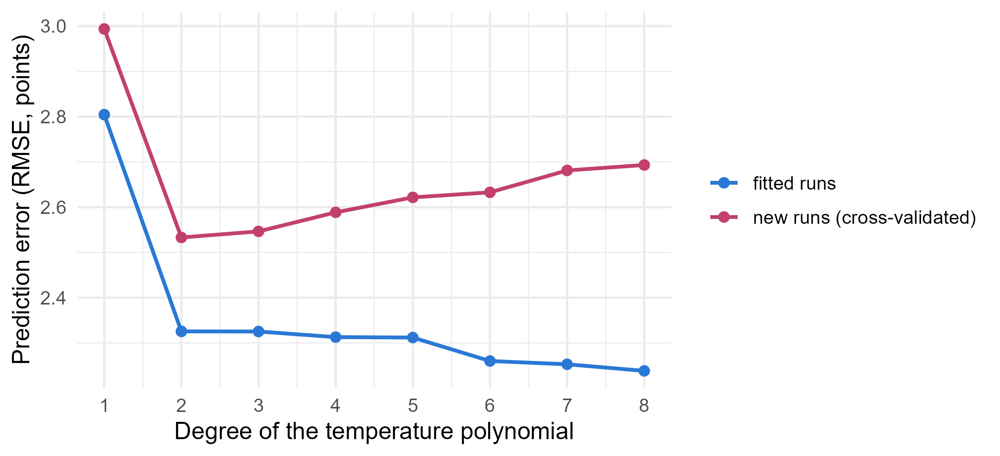
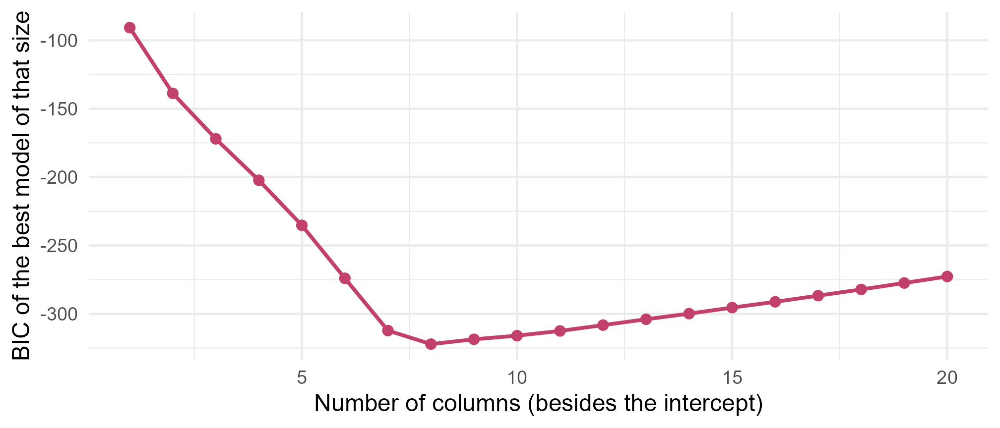

Module 2 · Lesson 12 of 15 Week 42 of 160 About 5–7 hours
Model building and selection
Choosing which predictors belong, without fooling yourself
See how adding terms always improves the fit but can make predictions worse, compare models with adjusted R-squared, AIC, BIC and Mallows’ Cp, search with best-subset and stepwise selection, estimate prediction error with cross-validation, and learn what selection does to p-values.
Over the last seven lessons, you built a model for the process study one decision at a time: the water as a confounder, the catalyst and its interaction with temperature, a curve, the catalyst’s age, two runs dealt with. Each decision came from chemistry, a plot or a test. But the study recorded 19 columns. What if you’d simply thrown everything in? Or let the computer choose? This lesson is about choosing a model: the tools that help, and the traps that make it easy to fool yourself.
A model is like a recipe: leave out the flour and it’s a disaster, but adding every spice in the cupboard doesn’t make it better either. Let’s find the right amount!
In this lesson you’ll:
- decide what a model is for, because that changes how you choose it
- see overfitting: why more terms always fit the data better, and predict new data worse
- compare models with adjusted R^2, AIC, BIC and Mallows’ C_p
- search for models with best-subset and stepwise selection
- estimate prediction error honestly with cross-validation
- learn what selection does to p-values, and how to report a chosen model honestly
What is the model for?
Two very different goals lead to two different ways of choosing:
- Explanation. You want to know how much each factor affects the yield: what does a degree, a minute or 100 ppm of water do? Then the model must include the confounders (Lesson 5), whether or not they’re “significant”, and it should be chosen with subject knowledge, ideally before looking at the data, so that its tests mean what they say.
- Prediction. You want to predict the yield of next week’s batches as accurately as possible. Then any predictor that helps is welcome, and the test of a model is how well it predicts data it hasn’t seen.
Most real projects need some of both. A sensible strategy goes like this: start from what the science says should matter, build a model with those variables, check it with the diagnostics of Lessons 8 to 11, and use the tools of this lesson to compare a few serious candidates. Automatic searches can suggest candidates, but they’re no substitute for thinking.
In this lesson, the candidates are:
- the small model: temperature, residence time and water, from Lesson 5;
- the chemist’s model: the model you built through Lessons 7 to 10, with the curved temperature effect, the catalyst and its interaction with temperature, the residence time, the water and the catalyst age;
- the kitchen sink: the chemist’s model plus every other predictor in the study, including the reactor, stirrer speed, outdoor temperature, operator, jacket temperature, pressure and feed rate.
study <- read_csv("data/process_study.csv", show_col_types = FALSE) |>
mutate(temp_C = if_else(run_id == "P066", 185.1, temp_C)) |>
filter(run_id != "P047") |>
mutate(tc = temp_C - 185)
fit_small <- lm(yield_pct ~ temp_C + residence_min + feed_water_ppm, data = study)
fit_chem <- lm(yield_pct ~ tc * catalyst + I(tc^2) + residence_min + feed_water_ppm + catalyst_age, data = study)
fit_sink <- lm(yield_pct ~ tc * catalyst + I(tc^2) + residence_min + feed_water_ppm + catalyst_age +
reactor + stir_rpm + ambient_C + operator_id + jacket_C + pressure_bar + feed_rate_Lmin,
data = study)The temperature is centered at 185 °C, as usual, in the column tc.
More terms always fit better
Lesson 5 showed that R^2 can only go up when you add a predictor. Push that idea further: replace the curved temperature term in the chemist’s model with polynomials of higher and higher degree, from a straight line up to an 8th-degree polynomial. On the data used to fit them, they get better and better. But how well do they predict runs they haven’t seen? The rose line below answers that with cross-validation, which you’ll meet properly later in this lesson:
set.seed(2026)
folds <- sample(rep(1:10, length.out = nrow(study)))
cv_rmse <- function(formula) {
pred <- numeric(nrow(study))
for (f in 1:10) pred[folds == f] <- predict(lm(formula, data = study[folds != f, ]), study[folds == f, ])
sqrt(mean((study$yield_pct - pred)^2))
}
degrees <- 1:8
errors <- bind_rows(lapply(degrees, function(d) {
f <- as.formula(paste0("yield_pct ~ poly(tc, ", d, ", raw = TRUE) + residence_min + feed_water_ppm + catalyst + catalyst_age"))
tibble(degree = d, `fitted runs` = sqrt(mean(resid(lm(f, data = study))^2)), `new runs (cross-validated)` = cv_rmse(f))
}))
errors |>
tidyr::pivot_longer(-degree, names_to = "error on", values_to = "rmse") |>
ggplot(aes(x = degree, y = rmse, color = `error on`)) +
geom_line(linewidth = 0.9) +
geom_point(size = 2) +
scale_color_manual(values = c("fitted runs" = "#2a78d6", "new runs (cross-validated)" = "#C2416C")) +
scale_x_continuous(breaks = degrees) +
labs(x = "Degree of the temperature polynomial", y = "Prediction error (RMSE, points)", color = NULL) +
theme_minimal(base_size = 12)
The error on the fitted runs (blue) keeps falling, from 2.8 points for a straight line to 2.2 for degree 8. The error on new runs (rose) falls from degree 1 to degree 2, then rises. Beyond degree 2, the extra terms aren’t learning about the process. They’re learning the noise in these particular 119 runs, which won’t repeat. That’s overfitting.
It’s a trade-off between two kinds of error. A model that’s too simple is biased: it misses real structure, like the straight line missing the curve. A model that’s too complex has high variance: its coefficients chase noise, so they’d come out differently with different data. The best predictions come from the right balance between the two.
Your turn. Compare the R^2 of the degree-2 and degree-8 polynomial models.
The second model uses a polynomial of degree 8.
fit2 <- lm(yield_pct ~ poly(tc, 2, raw = TRUE) + residence_min + feed_water_ppm + catalyst + catalyst_age, data = study)
fit8 <- lm(yield_pct ~ poly(tc, 8, raw = TRUE) + residence_min + feed_water_ppm + catalyst + catalyst_age, data = study)
c(degree2 = summary(fit2)$r.squared, degree8 = summary(fit8)$r.squared)0.929 against 0.934. The six extra terms “explain” a little more of these runs, and predict new runs worse. R^2 can’t tell you when to stop.
Criteria that charge for complexity
Several criteria balance fit against complexity. Each combines the SSE with a penalty for the number of coefficients, p:
| Criterion | Formula (up to a constant) | Prefer | Penalty per coefficient |
|---|---|---|---|
| adjusted R^2 | 1 - \frac{\text{SSE}/(n-p)}{\text{SST}/(n-1)} | larger | mild |
| AIC, Akaike’s information criterion | n \ln(\text{SSE}/n) + 2p | smaller | 2 |
| BIC, the Bayesian information criterion | n \ln(\text{SSE}/n) + p \ln n | smaller | \ln n, about 4.8 here |
| Mallows’ C_p | \text{SSE}_p / \hat\sigma^2_{\text{full}} - n + 2p | smaller, and close to p | 2 |
The n\ln(\text{SSE}/n) part rewards fit, and the second part punishes size. AIC aims at the model that predicts best. BIC charges more per coefficient (whenever n > 7), so it picks smaller models, and with enough data it tends to find the true model if it’s among the candidates. C_p compares each model’s SSE with the error variance estimated from the biggest model: a model that leaves out nothing important has C_p \approx p, and one that misses something has C_p much bigger than p. All four penalize with the same ingredients, so they often agree.
The absolute values of AIC and BIC mean nothing: only differences between models fitted to the same data matter. A difference of 2 or less is small, and more than 10 is decisive. R’s AIC() and BIC() compute them from the log-likelihood, which adds a constant but gives the same differences.
tibble(model = c("small", "chemist's", "kitchen sink"),
coefficients = sapply(list(fit_small, fit_chem, fit_sink), function(m) length(coef(m))),
r2 = sapply(list(fit_small, fit_chem, fit_sink), function(m) summary(m)$r.squared),
adj_r2 = sapply(list(fit_small, fit_chem, fit_sink), function(m) summary(m)$adj.r.squared),
AIC = sapply(list(fit_small, fit_chem, fit_sink), AIC),
BIC = sapply(list(fit_small, fit_chem, fit_sink), BIC))
#> # A tibble: 3 × 6
#> model coefficients r2 adj_r2 AIC BIC
#> <chr> <int> <dbl> <dbl> <dbl> <dbl>
#> 1 small 4 0.799 0.794 672. 686.
#> 2 chemist's 10 0.954 0.950 510. 540.
#> 3 kitchen sink 21 0.956 0.948 524. 585.The kitchen sink has the highest R^2, as it must. But every criterion that charges for complexity prefers the chemist’s model: higher adjusted R^2, an AIC 14 lower, and a BIC 45 lower. The 11 extra coefficients don’t earn their keep.
Your turn. Compute the AIC and BIC of the chemist’s model and the kitchen sink.
BIC(fit_sink).
c(AIC_chem = AIC(fit_chem), AIC_sink = AIC(fit_sink),
BIC_chem = BIC(fit_chem), BIC_sink = BIC(fit_sink))AIC: 509.7 against 523.9. BIC: 540.3 against 585.0. Both favor the chemist’s model, BIC more strongly, because it charges more for each of the sink’s extra coefficients.
Your turn. Compute Mallows’ C_p for the chemist’s model, using the kitchen sink to estimate \sigma^2.
The penalty is 2p: 2 * p.
sigma2_full <- deviance(fit_sink) / df.residual(fit_sink)
n <- nrow(study)
p <- length(coef(fit_chem))
deviance(fit_chem) / sigma2_full - n + 2 * pC_p = 5.7 with p = 10: below p, so the chemist’s model has left out nothing that the kitchen sink captures. The small model’s C_p is 341, with p = 4: it’s missing a lot.
Best-subset selection
With criteria in hand, you could let the computer search. Best-subset selection fits every combination of candidate columns, and reports the best model of each size. With k candidates there are 2^k subsets, which sounds hopeless, but the leaps package uses a clever “branch and bound” search that avoids fitting most of them. Here, the kitchen sink’s 20 columns (more than a million subsets) take a fraction of a second:
X <- model.matrix(fit_sink)[, -1]
subsets <- leaps::regsubsets(x = X, y = study$yield_pct, nvmax = ncol(X))
s <- summary(subsets)
ggplot(tibble(size = seq_along(s$bic), bic = s$bic), aes(x = size, y = bic)) +
geom_line(color = "#C2416C", linewidth = 0.9) +
geom_point(size = 2, color = "#C2416C") +
labs(x = "Number of columns (besides the intercept)", y = "BIC of the best model of that size") +
theme_minimal(base_size = 12)
BIC drops steeply up to 8 columns, and then rises slowly: every extra column costs more than it gains. regsubsets() works with columns, not variables, so it can choose some dummies of a factor and not others. That’s both a strength and a weakness: it found a model with only C’s temperature interaction, not B’s, which fits what Lesson 10 discovered, but it would just as happily keep one operator’s dummy and drop the rest, which would make no sense.
Your turn. Which 8 columns does the best model of size 8 use?
s$which has one row per model size. Pick the row of the best one: best.
X <- model.matrix(fit_sink)[, -1]
subsets <- leaps::regsubsets(x = X, y = study$yield_pct, nvmax = ncol(X))
s <- summary(subsets)
best <- which.min(s$bic)
names(which(s$which[best, -1]))The temperature and its square, the two catalyst dummies, C’s temperature interaction, the residence time, the water and the catalyst age: the chemist’s model, minus B’s (non-existent) interaction. None of the seven extra variables made it. C_p picks the same 8 columns.
Stepwise selection
Stepwise selection is a greedier search. Backward elimination starts from the biggest model and repeatedly drops the term whose removal improves the criterion most, until no removal helps. Forward selection starts from nothing and adds terms one at a time. R’s step() does either (or both), using AIC by default, and it works with whole terms: a factor’s dummies go in or out together, and it never drops a main effect while its interaction is still in the model.
step(fit_sink, trace = 0)
#>
#> Call:
#> lm(formula = yield_pct ~ tc + catalyst + I(tc^2) + residence_min +
#> feed_water_ppm + catalyst_age + tc:catalyst, data = study)
#>
#> Coefficients:
#> (Intercept) tc catalystB catalystC I(tc^2)
#> 59.054152 0.557778 3.144974 -1.719019 -0.012647
#> residence_min feed_water_ppm catalyst_age tc:catalystB tc:catalystC
#> 0.342829 -0.058007 -0.569067 0.009974 0.254990Starting from the kitchen sink, backward elimination lands on exactly the chemist’s model. With k = log(nrow(study)), step() uses BIC instead, and here it lands on the same model. Forward selection from an empty model gets there too.
That’s reassuring, but don’t read too much into it. This dataset was generated from a model like this one, its signal is strong, and the junk variables really are junk. With weaker signals and more correlated candidates, stepwise searches often disagree with one another, depend on the starting point, and change their minds with small changes in the data. Try it: on bootstrap resamples of these same runs, backward elimination keeps the operator in about two out of three, purely by chance.
Your turn. Run backward elimination from the kitchen sink, and list the terms it keeps.
Start from the biggest model, fit_sink.
chosen <- step(fit_sink, trace = 0)
attr(terms(chosen), "term.labels")The chemist’s terms, and nothing else. (trace = 0 hides the long printout of every step. Try trace = 1 to watch it work.)
Cross-validation
The most direct test of a model meant for prediction is to predict. If you had new data, you’d fit the model to the old data and measure its errors on the new. Cross-validation fakes new data from the data you have:
- Split the runs at random into k groups, called folds, usually 5 or 10.
- Hold out one fold, fit the model to the others, and predict the held-out runs.
- Repeat for every fold, so that each run is predicted exactly once by a model that never saw it.
- Summarize the prediction errors, often by their root mean square (RMSE).
The model with the smallest cross-validated error predicts best. It’s an honest estimate because no run helps predict itself. Unlike AIC and BIC, it doesn’t rest on the model’s assumptions, and it works for any prediction method at all, which is why Module 7 uses it everywhere.
For our three models, 10-fold cross-validation gives prediction errors of 4.04 points for the small model, 2.05 for the chemist’s model, and 2.23 for the kitchen sink. The sink fits its own runs better than the chemist’s model does, and predicts new runs worse. With 37 coefficients (adding every two-way interaction), the error on new runs climbs to 2.67.
Your turn. Write the cross-validation loop for the chemist’s model. The folds are already assigned.
Predict the held-out fold, test.
set.seed(2026)
folds <- sample(rep(1:10, length.out = nrow(study)))
pred <- numeric(nrow(study))
for (f in 1:10) {
train <- study[folds != f, ]
test <- study[folds == f, ]
model <- lm(yield_pct ~ tc * catalyst + I(tc^2) + residence_min + feed_water_ppm + catalyst_age, data = train)
pred[folds == f] <- predict(model, newdata = test)
}
sqrt(mean((study$yield_pct - pred)^2))2.05 points. The same model’s error on the runs it was fitted to is 1.88: a little optimistic, as fitted errors always are. The cross-validated number is the one to quote for “how well will this predict next month’s batches?”.
Selection and honesty
Selection has a hidden cost. The p-values, confidence intervals and R^2 of a selected model are too optimistic, because the same data chose the model and then tested it. A predictor that made it through selection did so partly because, in this sample, it happened to look good. Its “p = 0.01” was earned in a contest that it was always going to win.
You’ll see this vividly in the second challenge, where selection on pure noise produces “significant” predictors. Some habits that keep you honest:
- Pre-specify the model for the main question, from the science, before looking at the outcome. Test that model.
- Use selection to explore, and say that you did, and how.
- Judge prediction models by cross-validation, or better, on genuinely new data.
- Check stability: does the chosen model survive bootstrap resamples, or different criteria?
- Don’t drop confounders because they aren’t significant: a confounder’s job is to remove bias from other coefficients.
Challenge round
Challenge 1 · Choosing the degree by cross-validation. Compute the cross-validated RMSE of the polynomial models of degree 1 to 6, and find the best degree.
which.min(errors) gives the degree with the smallest error.
set.seed(2026)
folds <- sample(rep(1:10, length.out = nrow(study)))
cv_rmse <- function(formula) {
pred <- numeric(nrow(study))
for (f in 1:10) pred[folds == f] <- predict(lm(formula, data = study[folds != f, ]), study[folds == f, ])
sqrt(mean((study$yield_pct - pred)^2))
}
errors <- sapply(1:6, function(d) {
cv_rmse(as.formula(paste0("yield_pct ~ poly(tc, ", d, ", raw = TRUE) + residence_min + feed_water_ppm + catalyst + catalyst_age")))
})
round(errors, 3)
which.min(errors)Degree 2, with an error of 2.53 points, against 2.99 for a straight line and 2.55 to 2.63 for degrees 3 to 6. Cross-validation, AIC and BIC all agree with the residual plot from Lesson 8: a single bend.
Challenge 2 · Selecting from noise. Make a dataset where nothing is related to anything: a random response and 20 random predictors. Let backward elimination choose a model, and look at the p-values of the predictors it keeps.
Count the kept predictors with p_values below 0.05.
set.seed(2030)
noise <- as.data.frame(matrix(rnorm(119 * 20), nrow = 119))
noise$y <- rnorm(119)
chosen <- step(lm(y ~ ., data = noise), trace = 0)
p_values <- summary(chosen)$coefficients[-1, "Pr(>|t|)"]
round(p_values, 4)
sum(p_values < 0.05)Selection kept 3 of the 20 noise columns, and 2 of them have p-values below 0.05. The selected model’s overall F-test even gives p = 0.001. Every one of those numbers is a fiction: there’s nothing in these data at all. Selection found the luckiest columns, and then the tests congratulated it. That’s why p-values from a selected model can’t be read at face value.
Quick quiz
1. As you add terms to a model, what happens to the error on the data it was fitted to?
The fitted error can only go down, which is why it can’t be used to choose the size of a model. The error on new data falls, then rises.
2. What is overfitting?
An overfitted model has learned the quirks of one sample. Its high R^2 is real, but useless for prediction.
3. Two models have AICs of 509.7 and 523.9. Which is preferred?
Smaller is better, for both AIC and BIC. A difference of 14 is decisive.
4. Why does BIC tend to choose smaller models than AIC?
With 119 runs, BIC charges 4.8 per coefficient, more than twice AIC’s 2.
5. What makes cross-validation an honest estimate of prediction error?
No observation helps predict itself, so the errors are like errors on new data.
6. You let stepwise selection choose a model, and a predictor it kept has p = 0.01. How should you read that p-value?
Selection keeps the predictors that look best in this sample. Their p-values don’t account for the search, as the noise challenge showed.
Wrap-up
You can now choose a model without fooling yourself! Here’s what you’ve learned:
- Purpose first: a model for explanation should be chosen with subject knowledge and include the confounders. A model for prediction should be judged by how well it predicts new data.
- Overfitting: more terms always fit the data better, but beyond a point they fit the noise, and predict worse. It’s a trade-off between bias and variance.
- Criteria: adjusted R^2 (larger is better), AIC and BIC (smaller is better, BIC stricter), and Mallows’ C_p (smaller, and close to p) all trade fit against size.
- Searches:
leaps::regsubsets()finds the best subset of each size, andstep()adds or drops whole terms by AIC (or BIC, withk = log(n)). Both are tools for suggesting candidates. - Cross-validation estimates prediction error by predicting each fold from the others. The chemist’s model predicted best: 2.05 points, against 2.23 for the kitchen sink.
- Honesty: p-values after selection are too optimistic. Pre-specify the main model, report how you chose, check stability, and keep the confounders.
TipPractice in RStudio (optional, about an hour)
Download process_study.csv into your project’s data-raw/ folder, and apply Lesson 10’s cleaning.
- Stepwise, every way. Run
step()backward from the kitchen sink, forward fromlm(yield_pct ~ 1)withscope = formula(fit_sink), and in both directions. Repeat withk = log(nrow(study)). Do they all agree? - Instability. Write a loop that draws 50 bootstrap resamples of the runs and runs backward elimination on each. Count how often each term is kept. Which junk variables sneak in most often?
- Leave-one-out. For linear models, leave-one-out cross-validation has a shortcut: the prediction error for run i is e_i/(1 - h_{ii}). Compute
sqrt(mean((resid(fit_chem) / (1 - hatvalues(fit_chem)))^2))and compare it with the 10-fold result. - The purity model. Build a model for
purity_pctthe same way: start from the chemistry (which variables should affect purity?), check the diagnostics, and compare a few candidates by AIC, BIC and cross-validation.
NoteKey words from this lesson
- Overfitting
- Fitting the noise in a sample as well as the signal, so that the model predicts new data worse than a simpler one.
- Bias-variance trade-off
- Simple models err by missing structure (bias), and complex ones by chasing noise (variance). The best predictions balance the two.
- AIC (Akaike’s information criterion)
- n\ln(\text{SSE}/n) + 2p up to a constant. Smaller is better. It aims at the best predictive model.
- BIC (Bayesian information criterion)
- n\ln(\text{SSE}/n) + p\ln n up to a constant. Smaller is better. It charges more per coefficient than AIC.
- Mallows’ C_p
- \text{SSE}_p/\hat\sigma^2_{\text{full}} - n + 2p. A model that misses nothing important has C_p \approx p.
- Best-subset selection
- Comparing the best model of every size, found by an exhaustive (or branch-and-bound) search.
- Stepwise selection
- Adding (forward) or removing (backward) terms one at a time, guided by a criterion such as AIC.
- Cross-validation
- Estimating prediction error by repeatedly fitting the model to part of the data and predicting the rest.
NoteWant to read more?
- Penn State STAT 501, Lesson 10: Model Building. The model-building process, stepwise regression and best-subset selection, with the criteria.
- Gareth James, Daniela Witten, Trevor Hastie and Robert Tibshirani, An Introduction to Statistical Learning, chapters 5 and 6. Cross-validation, subset selection and their modern alternatives. The book is free online, and Module 7 uses it.
- Frank Harrell, Regression Modeling Strategies (Springer, 2nd edition), chapter 4. A forceful case against stepwise selection, and what to do instead.